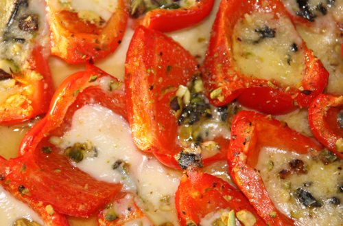
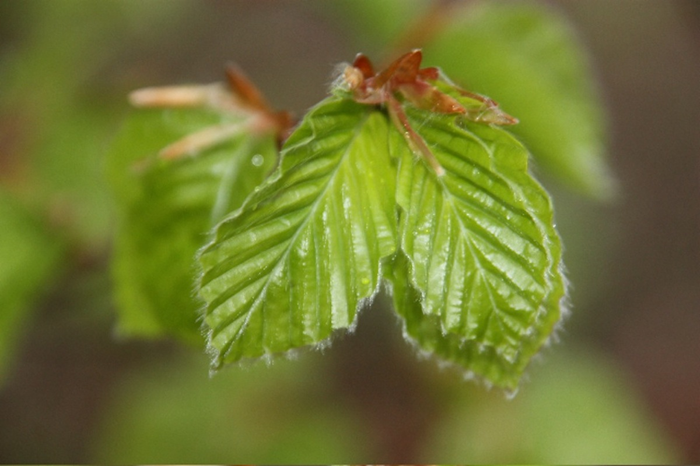
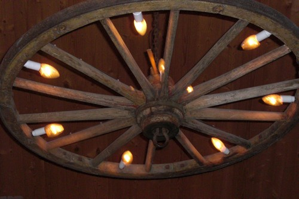

Hva media skriver:
"Vestfold Blad" hadde i januar 2012 et intervju med et par som hadde vært på Prep-kurs på Aarholt-tunet. De hadde "lært å krangle på en konstruktiv måte". Avisa intervjuet også Ingfrid og Svein. Se reportasjen. Den tar litt tid å laste ned, skroll nedover til tekst så kommer bildene etter hvert: Klikk her - avisartikkel.
Noen evalueringer og mail-responser etter Prep-kurs på Aarholt-tunet
"Hei igjen Ingfrid og Svein. Vi vil rette en stor takk til dere for at vi allerede samme kveld kunne praktiser lytte-/taleteknikken som vi lærte på samlivskurset, noe som fungerte utrolig godt. Det spesielle med kurset var at dere også ga oss et innblikk i deres samliv ved måten dere så på hverandre og kjærligheten som formelig lyste mellom dere. Dere er utrolige sympatiske, gode og omsorgsfulle mennesker begge to, og vi kommer aldri til å glemme dere, hva dere lærte oss, viste oss og ga av dere selv. Selv om vi har en vei å gå, så er også vi kommet nærmere hverandre etter dette kurset. Vi skal ikke gi opp! Det var en opplevelse å få bo på den koselige gården deres, det ga også en velvære og sitte i bryggerhuset sammen med noen av de andre deltagerne og prate om kvelden. Maten var også et kapittel som taler for seg selv, en nytelse for både øye og mage. Stor takk til dere! Lykke til med deres videre satsing på samlivskurs-virksomhet og bondegårdsferie, dere har våre varmeste anbefalinger. Takknemmelig hilsen og varme klemmer fra et par på 46 og 48 år som har lang fartstid sammen."
"Jeg hadde egentlig ikke noen særlige forventninger. Men jeg lærte noen teknikker for å stoppe opptrapping i en konflikt. Mann 30 år."
"Relevante tema, flinke rollespillere, konkrete oppgaver, tidseffektivt. Veldig fornøyd med at vi fikk tid sammen vi to til å snakke om viktige ting, dele tanker og følelser i en ellers superhektisk hverdag. Topp mat og hyggelig atmosfære. Det som var negativt var at det var lenge å sitte og mye stoff som skulle inn på kort tid. Godt kurset gikk over tre dager. Hilsen kvinne i 20 årene."
"Føler at kurset på mange måter har ufarliggjort våre ulikheter ved å gi oss verktøy som gjør oss jevnbyrdige i møte med utfordringer. Jeg ble positivt overrasket ut fra hva jeg forventet av kurset. Mann 38 år."
"Svært fornøyd med å få litt teori presentert først, deretter ble den visualisert og så fikk vi anledning til egenøvelse vi to. Veldig bra. Enkelte økter kunne vært lengere, men dette er nok svært individuelt. Kvinne i slutten av 50-årene."

"Vil bare takke for et flott opplegg på samlivskurset hos dere. Mange tanker og følelser åpnet seg hos meg som jeg ikke trodde jeg hadde. Fikk endelig pratet ut om følelser og tanker med hverandre...Kjempekoselig atmosfære og det gav i hvertfall meg en trygghet og sinnsro. Både mat og innkvartering var helt i TOPP KLASSE....Takk igjen for et proffesjonelt opplegg. Kommer gjerne igjen om noen år. Hilsen en mann og samboeren hans som gjerne bor på samme rom neste gang."
